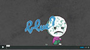

Cheese
Berta Vandermeeren
Er werd reeds een concepttekening voor een zelf gekozen soort kaas gemaakt. Dit concept wordt nu
volledig uitgewerkt in een smakelijke promowebsite! Durf hierbij voldoende fantasie te gebruiken! Bedenk
de wildste ideeën; neem het niet zo nauw met de werkelijkheid; humor werkt!!! Zie het dus vooral niet té
realistisch!
Mashit
Boris Vandenbergh
Maak een rich internet application in php & javascript waarbij je APIs kunt doorzoeken. De
zoekresultaten kun je als gebruiker verder filteren (relevantie van een resultaat aanduiden, of
niet-relevante zaken wissen uit de resultaten). De persoonlijke resultaten kan de gebruiker opslaan als
een project. Een gebruiker kan meer dan 1 project (met persoonlijk gefilterde resultaten) hebben.